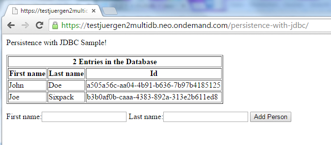

This step-by-step tutorial shows how you create a database in an SAP HANA database system with multitenant database container support enabled, using SAP Cloud Platform Console Client commands.
In the console client command line, you execute the command to create a database. Once the database is available, you use the console client command to create a binding between the database and an existing Java application. You use the commands to deploy the Java application and run it. You can view the application in the browser, enter first names and last names in the table, and check in SAP HANA Client that the names you entered are available in the database.
To be able to use this functionality, please order an SAP HANA database system enabled for SAP HANA multitenant database containers.
Please contact SAP for details at the SAP Support Portal as described at Get Support.
You should not use SAP Cloud Platform beta features in productive accounts, as any productive use of the beta functionality is at the customer's own risk, and SAP shall not be liable for errors or damages caused by the use of beta features.
Go through the relevant steps:
| Steps | Tools |
|---|---|
| Prerequisites | |
| 1. Create a Database Using Database System mdc1 |
Console client, SDK |
| 2. Deploy Java Application (Person Sample) into Account |
Maven Console client, SDK |
| 3. Create a Database User and Assign a Role |
Console client, SDK Database tunnel SAP HANA Client |
| 4. Bind Java Application to the Database |
Console client, SDK |
| 5. Start Java Application and Add Person Data with Servlet |
Console client, SDK Browser SAP HANA Client |
The tutorial is based on the SDK for Java Web.
You have installed an SAP HANA database system enabled for multitenant database container support. This system is assigned to an account.
You have a user with the administrator role for the account.
You have installed Maven.
Open a command window and navigate to the <SDK>/tools folder.
\tools>neo list-dbms -a multidb -h hana.ondemand.com -u myuser
SAP Cloud Platform Console Client
Password for your user:
Dedicated:
DB System DB Type DB Version
mdc1 HANAMDC 1.00.93.00.1424770727
mdc2 HANAMDC 1.00.93.00.1424770727\tools>neo create-db-hana -a multidb -h hana.ondemand.com --dbsystem mdc1 -u myuser -i mydb
SAP Cloud Platform Console Client
Password for your user:
Password for HANA database SYSTEM user:
Repeat password for HANA database SYSTEM user:
Request to create HANA tenant database 'mydb' as part of HANA system 'mdc1' is accepted.
The request should be processed within next 10-20 minutes. To check the status of this
request you may use display-db-info command.To access the SAP HANA database, provide the SYSTEM user password.
\tools>neo display-db-info -a multidb -h hana.ondemand.com -u myuser -i mydb
If the console client reponse is that the status is CREATING, repeat the command until the status is STARTED.
Open the command window and navigate to the <SDK>/samples/persistence-with-jdbc folder.
To build the war file that you want to deploy with Maven, execute the mvn clean install command.
The generated persistence-with-jdbc.war file is available in the target folder.
Move the persistence-with-jdbc.war file to the <SDK>/tools folder.
\tools>neo deploy -h hana.ondemand.com -a multidb -b mytestapp -u myuser -s persistence-with-jdbc.war
SAP Cloud Platform Console Client
Requesting deployment for:
application : mytestapp
account : multidb
source : persistence-with-jdbc.war
host : https://hana.ondemand.com
elasticity data : [1 .. 1]
SDK version : 1.75.11
user : myuser
Password for your user:
Deployment started...
Uploading started......100%
Uploaded 49.1 KB in 7.0 s Speed: 6 KB/s
Processing started...
Processing completed in 0.0 s
Deployment finished successfully
Warning: No compute unit size was specified for the application so size was set automatically to 'lite'.You need the tunnel to connect to your database. You can use the connection details you obtain from the tunnel response to connect to database clients, for example, Eclipse Data Tools Platform (DTP).
Open the command window and navigate to the <SDK>/tools folder.
Only use this command window for the tunnel command.
\tools>neo open-db-tunnel -a multidb -h hana.ondemand.com -i mydb -u myuser
SAP Cloud Platform Console Client
Password for your user:
Opening tunnel...
Tunnel opened.
Use these properties to connect to your schema:
Host name : localhost
Database type : HANAMDC
JDBC Url : jdbc:sap://localhost:30015/
Instance number : 00
Use any valid database user for the tunnel.
This tunnel will close automatically in 24 hours or when you close the shell.
Press ENTER to close the tunnel now.You create a database user with SAP HANA client.
You can also create a database user with SAP HANA studio in Eclipse IDE. For more information, see Creating an SAP HANA Database from the Cockpit.
Open a new command window and navigate to the <SAP>/hdbclient folder. Start the client to work in interactive mode.
\hdbclient>hdbsqlWelcome to the SAP HANA Database interactive terminal.
Type: \h for help with commands
\q to quitConnect to the database using the connect command. Use the connection details you obtained from the tunnel response.
hdbsql=> \c -n localhost:30015 -u systemPassword: Connected to localhost:30015
You create the database user.
hdbsql NEO_MULTID...=> create user mydbuser password mypassword
0 rows affected (overall time 286,192 msec; server time 11,370 msec)
You assign the content_admin to the database user.
hdbsql NEO_MULTID...=> grant content_admin to mydbuser with admin option
If the database has a password policy that requires users to change their password after the initial logon, you need to provide a new password, otherwise you cannot work with the servlet.
Use the quit command to log off from the hdbsql client.
hdbsql NEO_MULTID...=> \q
In the command window, restart the hdbsql client.
\hdbclient>hdbsql
Welcome to the SAP HANA Database interactive terminal.
Type: \h for help with commands
\q to quithdbsql=> \c -n localhost:30015 -u mydbuser
Password: You have to change your password. Enter new Password: Confirm new Password: Connected to localhost:30015
Go to the command window you used to create the database.
\tools>neo bind-db -h hana.ondemand.com -a multidb -b mytestapp -i mydb --db-user mydbuser -u myuser
SAP Cloud Platform Console Client
Password for your user:
Password for your database user:
Database 'mydb' bound to the default data source of the account 'multidb', application 'mytestapp' using database user 'mydbuser'
\tools>neo start -h hana.ondemand.com -a multidb -b mytestapp -u myuser
SAP Cloud Platform Console Client
Requesting start for:
application : mytestapp
account : multidb
host : https://hana.ondemand.com
synchronous : false
SDK version : 1.75.11
user : myuser
Password for your user:
Start request performed successfully.
Triggered start of application process.
Status: STARTING\tools>neo start -h hana.ondemand.com -a multidb -b mytestapp -u myuser
SAP Cloud Platform Console Client
Requesting status for:
application: mytestapp
account : multidb
host : https://hana.ondemand.com
SDK version: 1.75.11
user : myuser
Password for your user:
Status: STARTED
URL: https://mytestappmultidb.hana.ondemand.com
Access points:
https://mytestappmultidb.hana.ondemand.com
Runtime: Java Web, 1.76 (valid until 16-Jul-2016)
Application processes:
ID State Last Change Runtime
15a9cb6 STARTED 17-Apr-2015 15:06:35 hana-java-web 1.76.7.1Copy the URL from the status command into the address field of your browser and add /persistence-with-jdbc/. Start the servlet in the browser and add person data.
Go to the hdbsql command window.
hdbsql=> select * from t_persons ID,FIRSTNAME,LASTNAME "a505a56c-aa04-4b91-b636-7b97b4185125","Michael","Adams" "b3b0af0b-caaa-4383-892a-313e2b611ed8","Donna","Moore"
2 rows selected (overall time 291,603 msec; server time 156 usec)